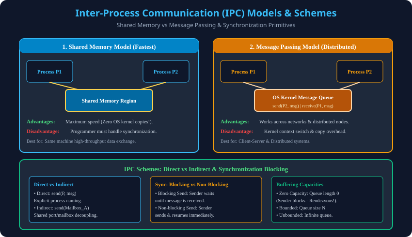

Syllabus Coverage: Gateway Classes Slides 129–137 | Shared Memory vs Message Passing, Direct vs Indirect, Blocking Semantics, Buffering Schemes.

| Feature | Shared Memory | Message Passing |
|---|---|---|
| Communication Path | User memory address space. | Kernel message buffers. |
| Speed | Extremely Fast (RAM bandwidth). | Slower (Syscalls + data copying). |
| Synchronization | Manual (Semaphores / Mutexes). | Automatic by kernel. |
| Network Scalability | Single machine only. | Works across network clusters. |